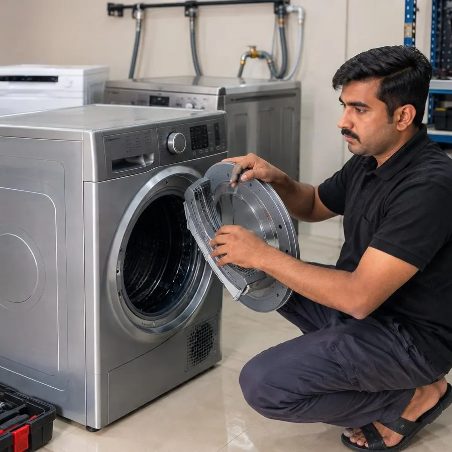

حوض النشافة لا يدور أو يصدر صوتاً: الأسباب والحل
إذا سمعت صوت المحرك دون دوران الحوض، أو صدر عن النشافة طقطقة أو صرير أو دوي، فالسبب غالباً في الحزام أو البكرات أو المحرك. نوضح الأسباب وما يجب فعله بأمان.
نشر بواسطة إصلاح الغسالات الأوتوماتيكية · آخر تحديث: أكتوبر 2026
هذه الصفحة جزء من دليلنا لـ صيانة النشافات في الرياض.
لماذا لا يدور حوض النشافة؟
- حزام الحوض مقطوع أو مرتخٍ.
- تآكل بكرة الشد أو بكرات الحوض.
- عطل في المحرك أو في مكثف التشغيل.
- مفتاح الباب لا يؤكد إغلاق الباب فلا تبدأ الدورة.
- جسم عالق بين الحوض والهيكل.
- تلف منزلقات الحوض أو محامله.
جدول تشخيص سريع
| ماذا تلاحظ | السبب المحتمل | ما تفحصه أولاً |
|---|---|---|
| طنين المحرك والحوض ثابت | حزام مقطوع أو محرك | أوقفها واتصل بالفني |
| صرير حاد | بكرة الشد أو البكرات | أوقفها واتصل بالفني |
| دوي مع كل دورة | منزلقات الحوض أو بكرة تالفة | أوقفها واتصل بالفني |
| طقطقة | جسم أو مشابك عالقة | افحص داخل الحوض |
ماذا يعني كل صوت؟
- صرير حاد: غالباً بكرة الشد أو البكرات المتآكلة.
- دوي أو طرق متكرر مع كل دورة: غالباً منزلقات الحوض أو بكرة تالفة.
- طقطقة: جسم صغير عالق أو ملابس بها أزرار أو مشابك.
- طنين دون دوران: غالباً الحزام أو المحرك.
افحص بأمان أولاً
- افصل النشافة عن الكهرباء.
- أخرج الملابس وتأكد أنه لا يوجد جسم عالق.
- حرّك الحوض بيدك: إن دار بسهولة تامة دون مقاومة فقد يكون الحزام مقطوعاً.
- تأكد من إغلاق الباب جيداً.
لا تفتح هيكل النشافة بنفسك؛ فيه أجزاء كهربائية وحرارية.
كيف يشخّص الفني المشكلة؟
- فحص الحزام وبكرة الشد وبكرات الحوض.
- اختبار المحرك ومكثف التشغيل.
- فحص مفتاح الباب ومنزلقات الحوض ومحاملها.
- تجربة دورة كاملة بعد الإصلاح.
حوض النشافة لا يدور في الرياض: متى تتصل بنا؟
إذا بقي الحوض لا يدور بعد التأكد من عدم وجود جسم عالق، أو استمر الصوت غير المعتاد، فاتصل بنا. يفحص الفني النشافة في منزلك بالرياض ويشرح لك العطل والتكلفة قبل البدء، والإصلاح مشمول بضمان 30 يوماً على القطع والعمالة. اقرأ أيضاً: النشافة لا تجفف، وصيانة النشافات.
الأسئلة الشائعة
غالباً بسبب قطع حزام الحوض، وقد يكون المحرك أو بكرة الشد هو السبب.
غالباً بكرة الشد أو بكرات الحوض المتآكلة، ويزداد الصوت مع الوقت.
لا يُنصح بذلك؛ أوقفها واطلب الفحص لتجنب تلف أكبر.
كيف يجدنا العملاء وعمليات البحث ذات الصلة
عمليات بحث ذات صلة:
بحاجة إلى إصلاح جهاز منزلي في الرياض؟
تواصل مع فريقنا اليوم لترتيب زيارة صيانة احترافية.